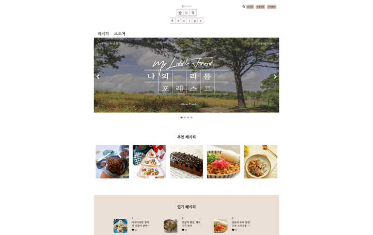

밥도둑🥘
2021/09/13 ~ 2021/10/25
레시피 검색과 식자재 구입까지 한번에 간편하게 해결할 수 있는 사이트
- MVC2 구조를 이용한 프로젝트
개발환경
JAVA : jdk 1.8.0_291
HTML5, CSS3, Javascript, JQuery
JSP : 2.3
Servlet : 3.1
Oracle Database 11g Express Edition Release 11.2.0.2.0 - 64bit Production
Apache Tomcat/8.5.70
구현기능
비회원 페이지
- 비회원은 메인 페이지, 레시피/상품 조회, 검색만 가능하도록 구현
회원 페이지
- 전체 페이지 모두 반응형으로 작성하여 최대 크기는 1200px가 되도록 구현했습니다.
- 카테고리별 조회 페이지는 보관 개수 순, 최신순으로 구현
- 모든 회원은 댓글을 달 수 있고, 글의 작성자는 글에 작성된 댓글에 대댓글을 작성할 수 있도록 구현
- Ajax를 이용하여 결제 내역 페이지에서 배송 준비 중/배송 완료 상품 구분하여 출력하도록 구현
- 회원페이지에서만 나타나는 아이콘은 모두 jstl을 이용하여 나타나도록 구현
관리자 페이지
- 관리자 페이지는 관리자가 한눈에 파악할 수 있도록 테이블 형태로 화면 구현
- 월별, 일별 매출을 확인할 수 있는 화면 구현
ERD
프로젝트 담당 내용
담당 역할 : css/db설계/sql문 작성 담당, 웹 크롤링 담당
1. 메인 프로젝트
구현 기능 설명
Header 부분에서 로그인 전에는 로그인 버튼과 회원가입 버튼이 출력되고, 로그인 후에는 로그인 버튼이 사라진 후 사용자의 닉네임과 로그아웃 버튼이 나타나고 nav의 오른쪽에 레시피 게시글 작성 링크와 장바구니이동 링크가 나타나도록 구현했습니다.
추천 레시피는 댓글이 많이 달린 게시글 순서로 출력되고, 인기 레시피는 보관 개수가 많은 순서로 출력되도록 구현했습니다.
인기 상품은 보관 개수가 많은 순서로 출력되도록 구현했습니다.
2. 레시피 카테고리별 조회 페이지
구현 기능 설명
카테고리 버튼을 클릭하면 해당 카테고리인 레시피만 출력되도록 했습니다.
레시피의 이미지 또는 제목 클릭시 해당 레시피의 상세 조회 페이지로 이동하도록 구현했습니다.
레시피 카테고리 페이지의 레시피 출력 순서는 좋아요 개수 순서, 최신 순서로 출력되도록 했습니다.
3. 레시피 상세조회 페이지

구현 기능 설명
레시피 이미지, 제목, 소개, 양, 소요되는 시간, 난이도, 동영상, 재료, 순서, 댓글을 데이터베이스에서 조회해와서 출력했습니다.
레시피 이미지 오른쪽의 하트 아이콘은 보관기능으로 비어 있는 하트 클릭 시 보관 테이블에 데이터가 저장이 되고, 하트가 찬 아이콘으로 변경되도록 구현했습니다.
하트가 찬 아이콘일 때 클릭시 보관 테이블의 데이터가 삭제되고 하트가 비어 있는 아이콘으로 변경되도록 구현했습니다.
레시피 오른쪽의 공유 아이콘 클릭시 url이 복사되고, url이 복사되었다는 alert이 뜨도록 구현했습니다.
로그인을 하지 않았을 때는 댓글만 보이고, 댓글 남기기 form은 보이지 않도록 구현했습니다.
로그인 한 상태에서는 댓글 남기기 form을 보이게 하고, 댓글을 남겼을 때는 자신이 남긴 댓글에는 수정버튼과 삭제버튼이 보이게 하여 수정기능과 삭제기능을 진행할 수 있도록 구현했습니다.
자신이 작성한 글인 경우에는 레시피 이미지 오른쪽 위 부분에 수정버튼과 삭제버튼이 나타나도록 구현했습니다.
4. 레시피 등록 페이지
구현 기능 설명
레시피 등록 페이지에서는 enctype을 multipart/form-data로 설정하여 이미지 파일도 저장할 수 있도록 구현했습니다. 파일선택 input에서 파일을 선택하면 선택한 사진을 미리 볼 수 있도록 jQuery를 이용하여 구현했습니다.
레시피 재료와 순서는 + 버튼 클릭 시 입력할 수 있는 input이 추가되도록 jQuery를 이용하여 구현했습니다.
5. 레시피 수정 페이지
구현 기능 설명
레시피 수정 페이지 화면이 뜨기 전에 데이터베이스에 접속하여 레시피 정보를 들고 와서 value값으로 작성하여 사용자가 작성했던 정보를 보고 수정할 수 있도록 구현했습니다.
6. 검색 페이지
구현 기능 설명
오른쪽의 레시피/상품 버튼을 클릭 시 레시피를 클릭하면 검색 단어에 대한 레시피 검색결과를 상품을 클릭하면 검색 단어에 대한 상품 검색 결과를 출력하도록 구현했습니다.
검색어를 입력하기 이전에는 인기 레시피와 인기 상품을 보관 개수 순서대로 5x4(20개)로 출력했습니다.
7. 장바구니 페이지
구현 기능 설명
전체 상품 체크박스를 이용하여 일괄로 전체 상품을 선택할 수 있습니다.
체크박스를 선택하면 그 상품의 금액/배송비를 더하고, 선택을 해제하면 상품의 금액/배송비를 빼도록 하여 오른쪽 부분에 계산된 결과값이 출력되도록 했습니다.또한 선택된 상품의 개수를 추가하거나 빼는 경우 상품의 금액이 변경되도록 했습니다.
상품금액이 계산되어 나오는 부분은 position의 sticky를 이용해서 화면에서 스크롤해서 내려가면 계산 부분이 따라서 내려오도록 구현했습니다.
8. 결제 페이지
구현 기능 설명
주문 상품 옆의 화살표 클릭 시 주문상품에 대한 내용이 토글형식으로 조회할 수 있습니다.
9. 결제내역 페이지
구현 기능 설명
오른쪽의 드롭다운 버튼으로 전체 상태/배송 준비중/배송 완료의 상태에 따른 결과를 불러올 수 있도록 ajax를 이용하여 구현했습니다.